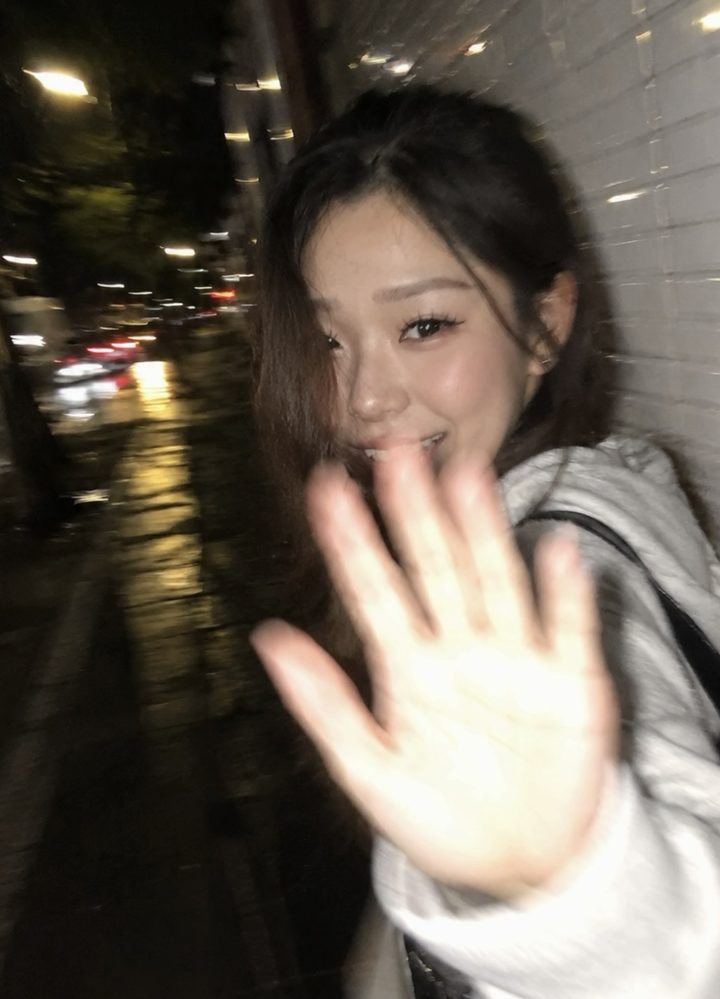
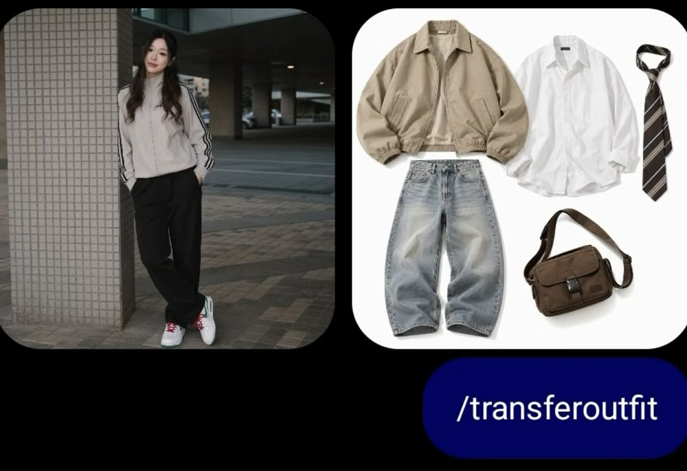
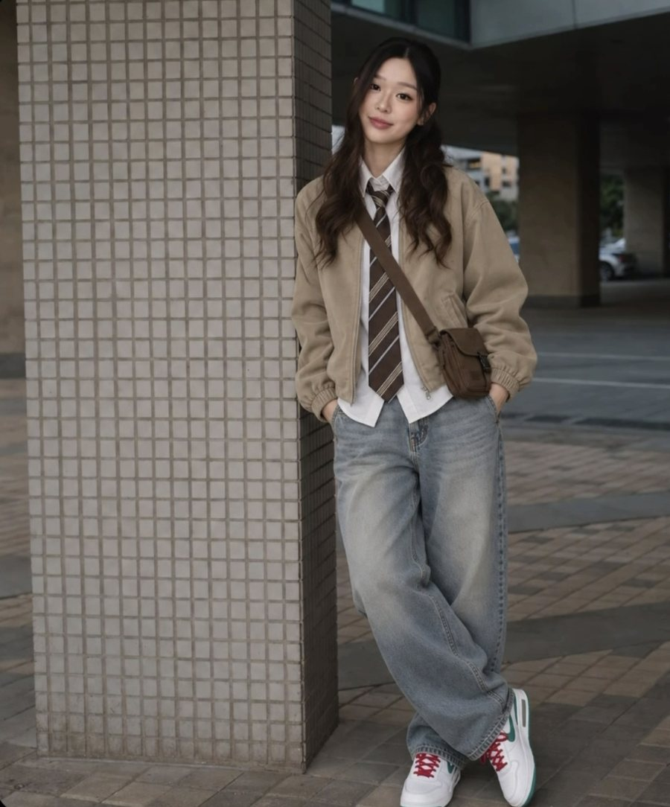
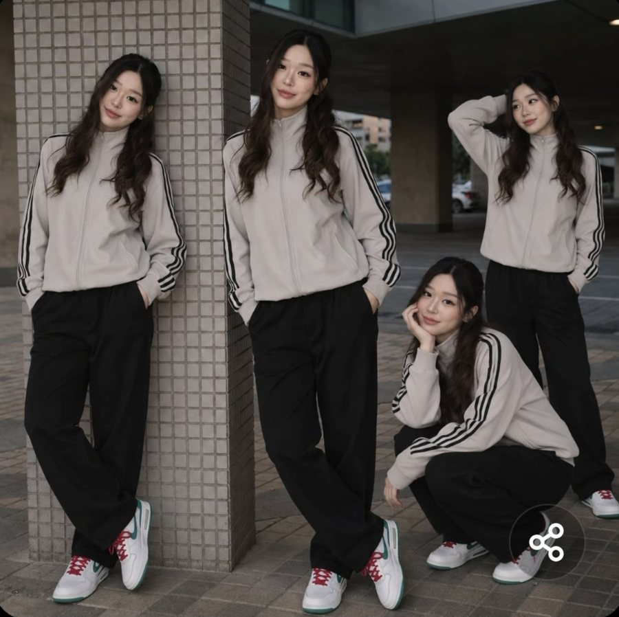

Hey, it's Cindy 🌱 All 100 visual codes: short phrases you add to an image prompt to control how the picture is shot.
btw the waitlist for AI System Club is now open! If you're keen on using AI to automate your content, video editing, job search, business or build AI agents, feel free to sign up (only if you want to hehe). Ps. the waitlist gets first dibs:)
the ones going viral right now
Viral ChatGPT codes
100 more codes below
Upload a photo of yourself, type one of these, done. The three with pictures are just below.
/transferoutfit
/fisheye
/clones
/nighttime flash
/motion blur
/direct flash
/door peephole
/car window
/fisheye hard light and fashion
/security cam
/crowd motion blur
/anime
/cinematic photo
/golden hour
/digi cam
/backlit
/long exposure
/portrait
/flash
/shutter drag
/wide
/phantom
/spotify
/ghost walk
/netflix
/worms eye wide
/paparazzi editorial
/fire flash
/aesthetic luxury insta
The prompts from my feed
These are the codes I have actually posted. All three start from a photo of you, so upload a clear one first. The flash wave needs the full prompt; the other two are just the code, typed exactly as shown, and it works.
The blurry night flash wave One photo in. The code is everything after the first line: handheld, flash, motion blur, imperfect framing.

🏃 The blurry night flash wave
Ultra-realistic candid smartphone photo, 9:16 vertical. Keep my face and features exactly the same.
Scene: Nighttime on a quiet city sidewalk beside a white ceramic tile wall. The subject is walking past the camera, turning back in surprise, raising one hand close to the lens to partially block it while smiling naturally. Capture an accidental, rushed moment with imperfect framing.
Shot on a handheld smartphone with flash. Strong camera shake, heavy motion blur, ghosting, noisy image, uneven exposure, harsh flash, deep shadows, and a raw unedited phone-camera look. The subject is slightly out of frame with distorted motion blur.
Mood: Candid, shy, playful, authentic, intrusive, and imperfect.
Negative Prompt: posed portrait, cinematic, studio lighting, beauty lighting, sharp focus, smooth skin, professional photography, anime, illustration, painting, CGI, 3D render, editorial.
/transferoutfit Two uploads: a photo of you, and a photo of the outfit pieces (a flat lay, a few product shots, a screenshot from a shop). Type the code and it dresses you in it, leaving everything else alone. This is what the two inputs looked like, then the result.


/clones One photo in, four of you out, each in a different pose, in one frame that still reads as a single photograph. Just the code.

the other 100
Camera angle, where the camera is standing
/drone view Straight down from high above. Makes anything look designed: a table, a street, a beach.
/worm view Camera on the floor looking up. Makes a person or a building look powerful and huge.
/fish eye Bulging wide lens, curved edges. Skate video energy, fun and a bit chaotic.
/bird's eye view High and looking down, but not vertical like a drone. Good for showing where things sit.
/low angle Slightly below eye line. The cheapest way to make a subject look confident.
/high angle Slightly above, looking down. Makes a subject look smaller or younger.
/dutch angle Tilted horizon. Instant unease, good for tension.
/over the shoulder From behind someone, looking at what they see. Great for screens and conversations.
/first person POV As if through your own eyes, hands sometimes in frame. Very native to Reels.
/flat lay Perfectly top down on a surface. The default for products, food and desk shots.
/three quarter view Turned 45 degrees. The most flattering angle for faces and products.
/profile shot Straight from the side. Editorial and a bit cold.
/extreme close up Fills the frame with one detail: an eye, a texture, a logo.
/wide establishing shot Shows the whole space before you go close. Opens a sequence.
Lens and focus, what the camera is wearing
/85mm portrait lens Compressed, flattering, blurred background. The portrait default.
/24mm wide lens Takes in the whole room. Slight stretch at the edges.
/telephoto compression Background looks closer and bigger than it really is. Very filmic.
/tilt shift Makes a real scene look like a tiny model.
/anamorphic lens Wide cinema frame with horizontal flares. Reads as expensive.
/shallow depth of field Subject sharp, everything else soft.
/creamy bokeh Background lights melt into soft circles.
/street photography Candid, found moments, natural light.
/cinematic film still Looks like a frame paused from a film, not a photo.
/product catalogue Clean, lit evenly, no distraction.
/behind the scenes Shows the lights, the crew, the mess around the shot.
the ones nobody uses yet
Learning and explaining, when the picture has to teach something
/comic book explainer Turns a concept into panels with characters and dialogue. Weirdly effective for anything abstract.
/flashcards Front and back cards on one sheet. Term on one side, plain-English answer on the other.
/infographic One topic, broken into labelled blocks with icons. The default for a carousel slide.
/timeline Events along a line with dates. Instantly shows what came before what.
/flowchart Boxes and arrows for a process. Shows the order and where it branches.
/decision tree If this then that, drawn out. Great for anything with rules.
/labelled diagram One object with lines pointing at every part. School textbook, and it works.
/cheat sheet Everything on one page, dense, no fluff. Made to be screenshotted.
/before and after Two states side by side. The fastest way to prove a point.
/illustrated step by step Numbered panels, one action each. For anything someone has to follow along with.
/mind map Central idea with branches. Shows how things connect rather than their order.
/cross section cutaway Sliced open to show the inside. Perfect for how something actually works.
/annotated screenshot A real interface with arrows and callouts on top. The most useful one for teaching software.
/storyboard A sequence of frames with notes. Plan a video before you film it.
the real skill
How to stack them without making mush
A photographer makes four decisions, and you can borrow all four. Pick one from each line, in this order, and stop:
📐 Where is the camera? Low angle, flat lay, over the shoulder. This is the one that changes the picture most, so choose it first.
💡 What is the light doing? Golden hour, nighttime flash, window light. This is the one that changes the feeling.
🎞️ What was it shot on? 35mm film grain, polaroid, VHS. Only add this if you want it to feel like it came from a particular time.
🎨 How is it graded? Muted pastel, teal and orange, desaturated. Last, and usually optional. If the first three are right you often do not need it.
Change one thing at a time. If you swap three codes at once and the image gets worse, you have no idea which one did it. Run the same subject with one code changed and you will learn faster in ten minutes than in a week of random prompting.
Make this actually useful
📌 Pick your ten. Nobody uses a hundred.
📱 Screenshot the lighting section. It is the one that earns its keep daily.
🔁 Keep one subject as your test image, a coffee, your product, your face, and run new codes against it so you can actually compare.
The fastest way to get better images is not a longer prompt. It is knowing the five words that photographers would have used. Now you have a hundred of them. ✨
the waitlist is now open
AI System Club is launching soon
Build AI systems with me through recorded lessons you can follow at your own pace. Join the waitlist for first access and the founding price.
btw this list gets first dibs the moment doors open :)